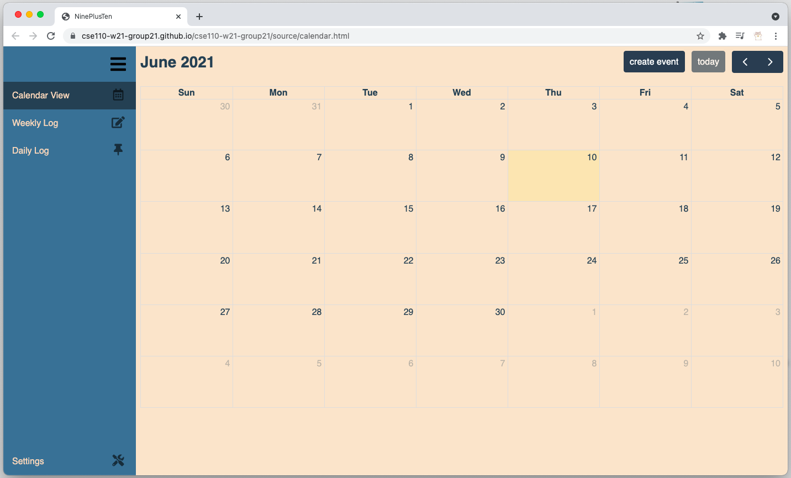
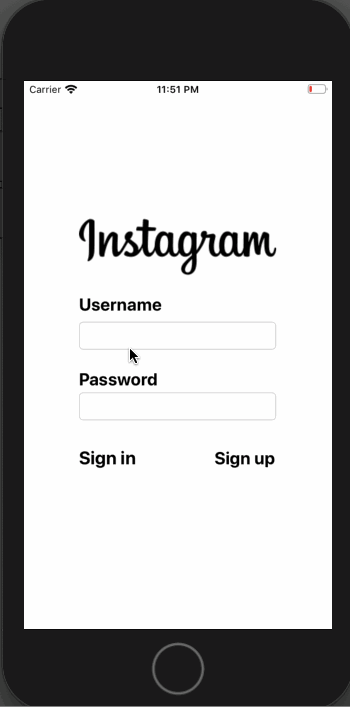

The Sun God Festival is a student-curated, daytime music and arts festival at UC San Diego. The website is built using React and Node/Express, source code can be found here.
Bullet Journal

An interactive Web App that helps be organized through calendar, daily logs, and many more. Source code can be found here.
Parstagram

This is an Instagram clone with a custom Parse backend that allows a user to post photos, view a global photos feed, and add comments! Source code can be found here.